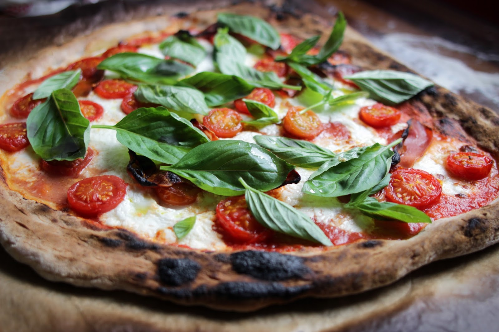
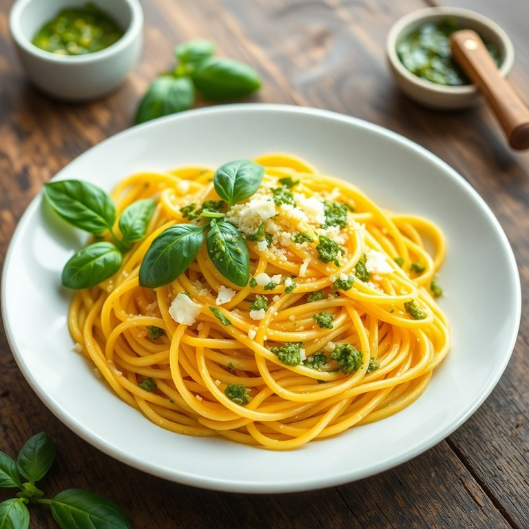

O manjericão é uma planta herbácea com origem confirmada no Sudeste Asiático, especificamente na Índia, onde é cultivado há mais de cinco milênios. A ciência botânica, através de estudos filogenéticos, demonstra que a espécie se diversificou naquela região antes de seguir pelas rotas comerciais de especiarias. Na Antiguidade, chegou ao Egito e ao Oriente Médio, sendo posteriormente introduzido na Europa pelos gregos, que o chamavam de basilikon ("planta real"). A disseminação pelas Américas ocorreu a partir do século XVII, trazida pelos colonizadores, encontrando no clima tropical as condições ideais para sua naturalização.
Para um plantio bem-sucedido, o manjericão exige solos ricos em matéria orgânica e com excelente drenagem. A época ideal de plantio coincide com a primavera e o verão, pois a planta é extremamente sensível ao frio e não sobrevive a geadas, preferindo temperaturas entre 18°C e 30°C. O ciclo de vida da planta inclui uma fase de floração, que ocorre geralmente no auge do verão, apresentando pequenas flores brancas ou lilases em forma de espiga. Para o uso culinário, é tecnicamente recomendado o corte das flores assim que surgirem, pois a floração altera o metabolismo da planta, reduzindo a concentração de óleos essenciais nas folhas e conferindo-lhes um sabor amargo.
Embora o gênero Ocimum possua dezenas de variações, o manjericão verde comum e o manjericão roxo são os mais utilizados devido ao contraste visual e perfis de sabor distintos. Abaixo, detalhamos as características botânicas e sensoriais de cada um:
Esta é a espécie "padrão" da culinária mundial. Caracteriza-se por folhas grandes, convexas (curvadas para baixo), de textura macia e cor verde brilhante.
O sabor do manjericão verde é uma combinação complexa de doçura e frescor. Ele possui notas proeminentes de cravo-da-índia (devido ao eugenol) e um fundo levemente mentolado. É um sabor "redondo" que não agride o paladar, sendo ideal para pratos que levam gorduras, como queijos e azeites, pois ele ajuda a equilibrar o peso desses ingredientes.

Esta variedade é visualmente impressionante, com folhas que variam do violeta profundo ao roxo escuro, quase negro. Ela é frequentemente utilizada tanto para fins culinários quanto ornamentais em jardins.

O manjericão roxo possui um sabor mais intenso e rústico do que o verde. Ele é menos doce e apresenta um perfil mais terroso e picante, com notas que lembram levemente o gengibre ou a pimenta-do-reino. Por conter antocianinas (os pigmentos que dão a cor roxa), ele pode apresentar um toque adstringente se consumido em grandes quantidades sozinho. Destaca-se principalmente no preparo de saladas frescas e na coquetelaria sofisticada.

O manjericão é uma verdadeira potência nutricional concentrada em folhas delicadas, oferecendo uma densidade notável de micronutrientes e compostos bioativos. Em sua composição, destacam-se as vitaminas K, A e C, além de minerais essenciais como magnésio, ferro e cálcio.
O consumo regular oferece benefícios sistêmicos confirmados pela ciência: suas propriedades antioxidantes combatem os radicais livres, auxiliando na saúde cardiovascular e no relaxamento dos vasos sanguíneos. Além disso, possui ação antibacteriana e efeito adaptógeno, ajudando a equilibrar os níveis de cortisol no organismo.
Este é o uso mais nobre do manjericão verde de folha larga. A regra de ouro: nunca aqueça o pesto, ou o manjericão oxidará e ficará amargo.
Uma receita que depende 100% da qualidade dos ingredientes. Aqui o manjericão traz o equilíbrio entre a acidez do tomate e a cremosidade do queijo.

Este prato é um dos pilares da "cozinha de despensa" (cucina povera). O segredo reside na técnica de emulsão com a água do cozimento. O manjericão entra no último segundo para preservar seu frescor.

Para enriquecer este trabalho, decidi investigar como o manjericão é percebido no meu ambiente familiar. Realizei uma pesquisa interna com meus parentes para entender quais variedades da planta eles mais gostam. Com base nesses dados que levantei, organizei a tabela abaixo.
| Manjericão Verde | Manjericão Roxo | Nenhum |
| 6 | 4 | 2 |
EMBRAPA. Manjericão: cultivo e utilização. Portal Embrapa, 2011. Disponível em: https://www.embrapa.br. Acesso em: 16 abr. 2026.
MINAMI, Keigo. A Cultura do Manjericão. ESALQ/USP, 2007. Disponível em: https://www.esalq.usp.br. Acesso em: 16 abr. 2026.
BRASIL. Ministério da Saúde. Alimentos Regionais Brasileiros. Brasília, 2015. Disponível em: https://bvsms.saude.gov.br. Acesso em: 16 abr. 2026.
RODRIGUES, V. G. S. Manjericão (Ocimum basilicum L.). Embrapa Rondônia, 2001.
JORGE, L. I. F. Ocimum micranthum Willd: Caracterizações histológica e química. Revista Adolfo Lutz, 1992.